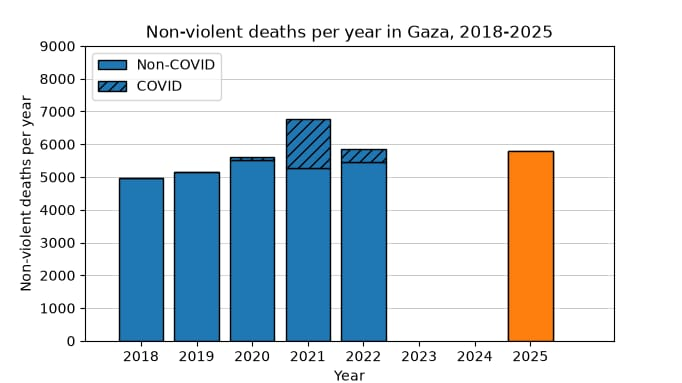
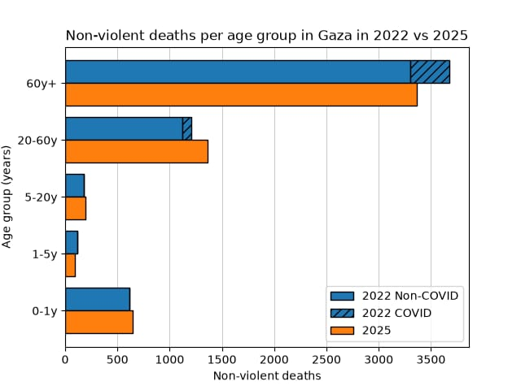

In depth
Hamas's Own Numbers
On September 30th, Gaza's health ministry published full 2025 mortality data — natural deaths included, for the first time since the war began. Its own ledger undercuts two of the war's loudest claims.
OCTOBER 6, 2026 · 8 MIN READ
Every casualty figure you've seen from Gaza for three years has come from one source: the Gaza Ministry of Health — a Hamas-run institution. Its numbers have been cited by the UN, quoted by every major outlet, and built into genocide cases at international courts. Last week, that same ministry published something it had never published during the war: a full accounting of all deaths in Gaza in 2025, natural causes included. And what its own ledger shows is not what its loudest amplifiers expected.
The report, issued September 30th by the ministry's Health Information Unit and covered by Al Jazeera, Haaretz, and Tasnim, is the first all-cause mortality release since 2022. Here is what it says.
I. The ledger
In 2025, there were 24,650 deaths in Gaza. Of these, 18,870 (76.6%) were violent: 17,286 (70.1%) attributed to "war operations," and 1,584 (6.4%) classified as accidents. The remaining 5,780 deaths (23.4%) were non-violent — disease, old age, and all other natural causes. Heart disease was the second-largest cause of death overall at 7.7%. Men accounted for 73.4% of deaths, women 26.6%.
An independent analyst, Eirik Schrader, ran the ministry's numbers against the pre-war baseline and posted the comparison. His first chart tells the story at a glance: non-violent deaths per year, 2018 through 2025.

II. The dog that didn't bark
Look at the orange bar for 2025: roughly 5,780 non-violent deaths. Now look at the pre-war years: about 5,000 in 2018, 5,150 in 2019, 5,600 in 2020, 5,850 in 2022 (2021 spiked with COVID). The 2025 figure sits squarely inside the pre-war range. There is no visible excess.
This matters because of what was claimed. Throughout 2024 and 2025, a frequent argument held that the indirect death toll — people dying from destroyed hospitals, hunger, disease, collapsed sanitation — must dwarf the direct toll. A July 2024 letter in The Lancet applied an arbitrary multiplier of four indirect deaths for every direct one and suggested it was "not implausible" that deaths could reach 186,000. That letter was correspondence, not a peer-reviewed study — but the number traveled the world anyway.
The ministry's own data now says otherwise. And it is not alone. A peer-reviewed household mortality survey published in The Lancet Global Health estimated about 8,540 excess non-violent deaths through January 2025 — real, but modest — and explicitly stated its findings were incompatible with both the four-times multiplier and with claims that tens of thousands had died of starvation. Notably, the same survey found the ministry undercounts violent deaths by roughly 35% — meaning its figures are a floor, not an inflation.
"Excess deaths lower than experts had estimated."
Haaretz, on the ministry's 2025 report — Oct. 2, 2026Consider the calendar. In August 2025, the IPC — the world's leading hunger monitor — declared famine in parts of Gaza, the first such declaration in the Middle East. That same year, by the health ministry's own count, non-violent mortality ran at essentially the pre-war rate, with an age distribution closely resembling 2022:

Two honest notes on method. First, the charts are Schrader's own computations from the ministry's data, not peer-reviewed work — though the totals reconcile exactly with Haaretz's independent reporting on the same release. Second, the ministry counts only deaths with issued death certificates; it acknowledges the final toll requires a comprehensive population survey. Both caveats cut in the same direction: the data are incomplete — and still show no excess.
III. The births
The report also gives a number rarely mentioned in coverage of the war: 50,227 live births in Gaza in 2025 — a figure corroborated by the ministry's own health director, who put it at "about 50,000." Subtract the 24,650 deaths and you get a natural increase of 25,577 people — population growth of about 1.2%, above the world average of roughly 0.85%.
Schrader extends the arithmetic: the ministry reports roughly 6,000 births per month currently. If non-violent deaths hold near the 2025 level, that would mean about twelve times more births than deaths — among the highest population growth rates in the world. That last step is his extrapolation, and the monthly figure is his alone — the 2025 annual total averages closer to 4,200 a month, so it implies a sharp recent rebound. Treat it as a projection, not a count. The counted part — 1.2% natural growth in a year of declared famine — stands on the ministry's own numbers.
"5,780 non-violent deaths — essentially the pre-war baseline."
Gaza Ministry of Health, 2025 mortality reportIV. What the ledger doesn't hide
None of this means 2025 was a normal year, and an honest reading of the ministry's own report says so. Three things it does not hide:
Newborns suffered. Under-5 mortality more than doubled, from 13.6 per 1,000 live births in 2022 to 33.4 in 2025. Babies dying on their first day of life rose roughly 75%; stillbirths doubled; prematurity and low birth weight surged as maternal care collapsed. The "no excess" headline coexists with real deterioration where the health system broke down most visibly.
2025 was the quieter year. Ceasefires covered roughly five months of it; about 15,858 of the 17,286 war-operation deaths came before the October 2025 ceasefire. The finding describes one lower-intensity year — it does not retroactively describe 2023–24.
Natural increase is not population growth. The Palestinian statistics bureau estimates Gaza's population actually fell about 10.6% by end of 2025 — the 25,577 natural increase was outweighed by roughly 100,000 departures. More babies than deaths, and still fewer people.
The most inconvenient witness
Step back and consider the source. If the Gaza Ministry of Health wanted to maximize the appearance of suffering, its own report would be a strange way to do it: a ledger showing non-violent mortality at the pre-war baseline, in the same year famine was declared. And the peer-reviewed survey suggests the ministry's violent-death counts are a conservative floor — if it inflates, it inflates badly.
The 186,000 figure was never a study. It was a letter, applying an arbitrary multiplier, that traveled further than the data ever supported. Now the data exist — from the accusers' own ministry, corroborated by Haaretz's independent read and a peer-reviewed survey — and they point the other way: a war with a terrible direct toll, and an indirect toll far smaller than the loudest claims insisted.
The record is there for anyone who wants it.
Sources
- Eirik Schrader — mortality analysis thread (X)
- Haaretz — "excess 2025 deaths lower than experts expected" (Oct. 2, 2026)
- Tasnim — ministry report summary (Sept. 30, 2026)
- Al-Watan Voice — mortality report details (Arabic, Sept. 30, 2026)
- The Lancet Global Health — Gaza Mortality Survey (peer-reviewed)
- On the Lancet 186,000 correspondence (July 2024)
Discussion
Join the discussion